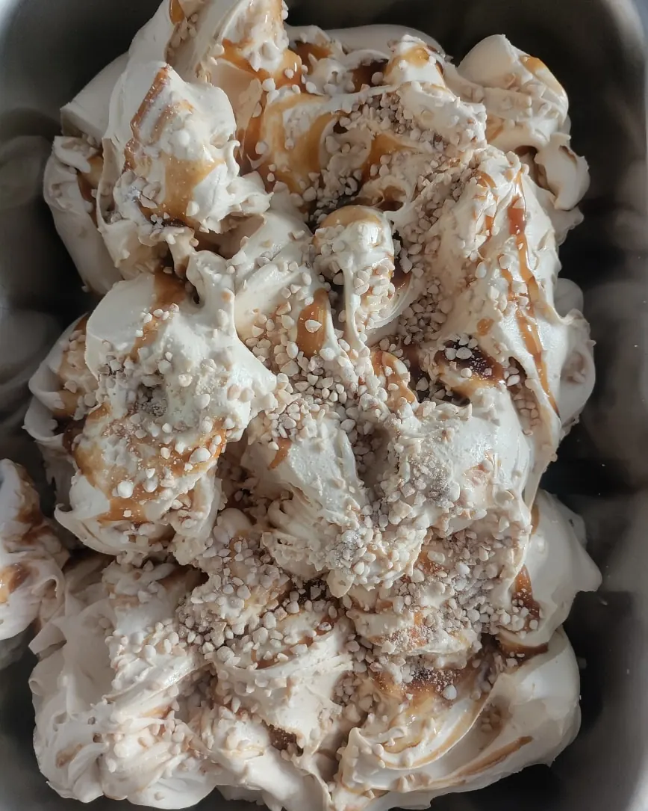
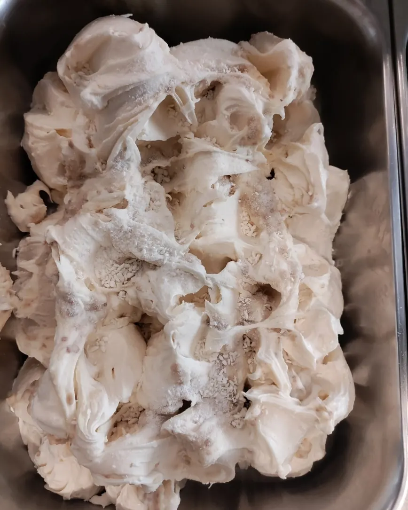
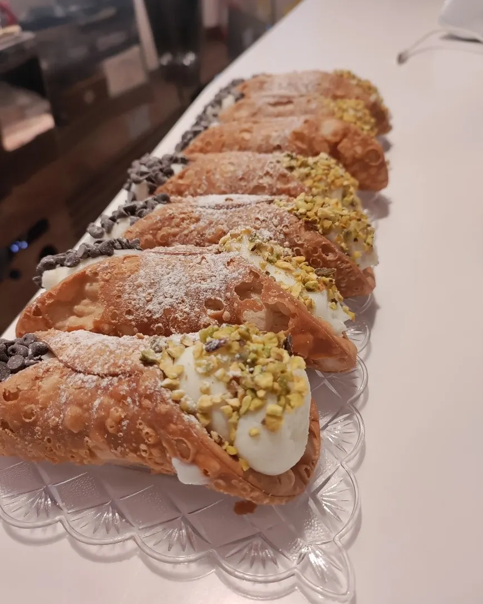
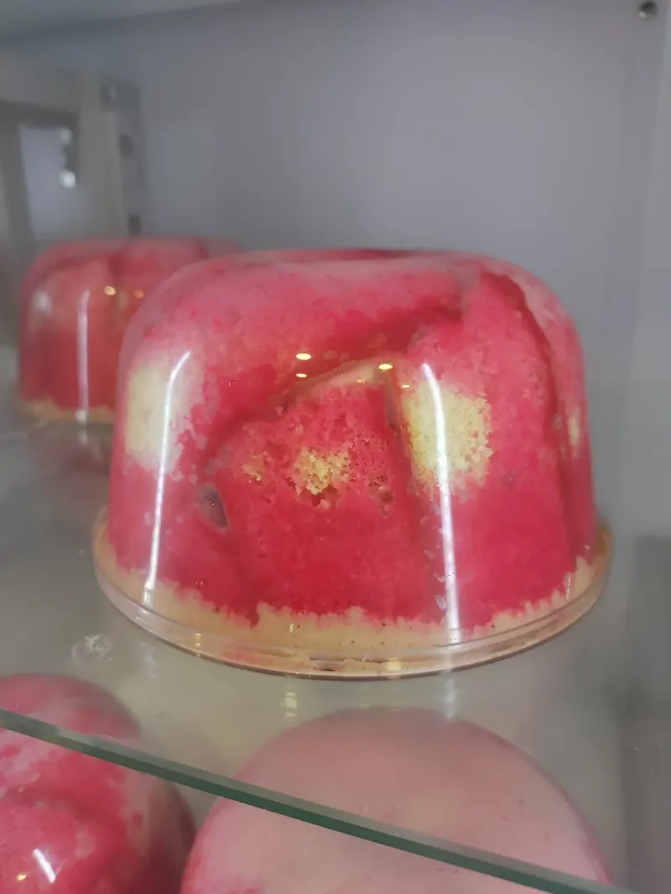
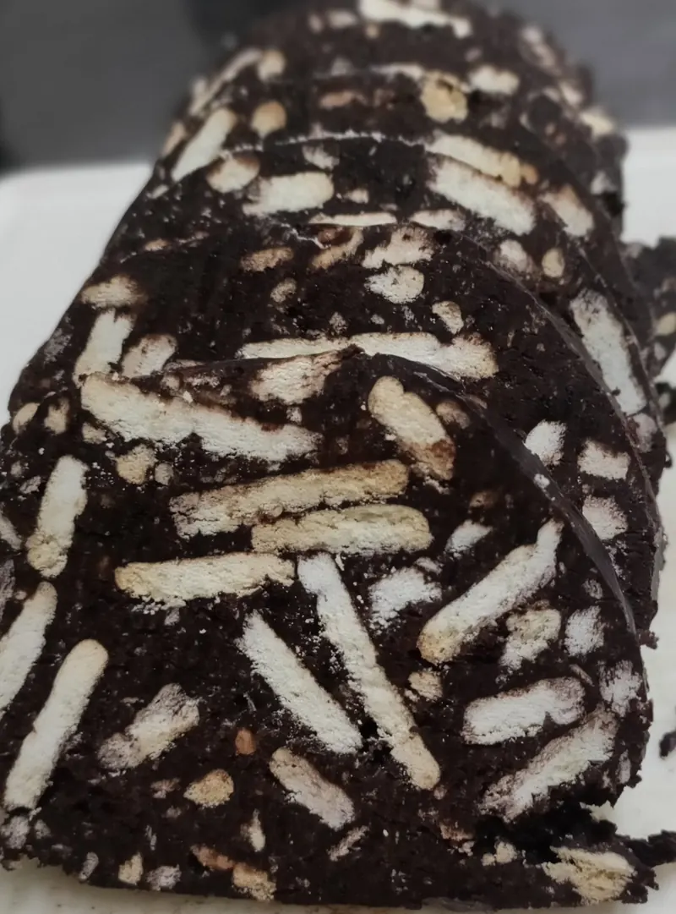
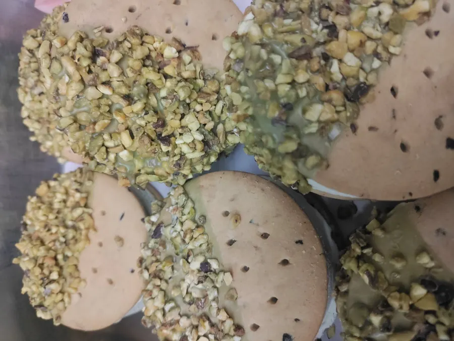
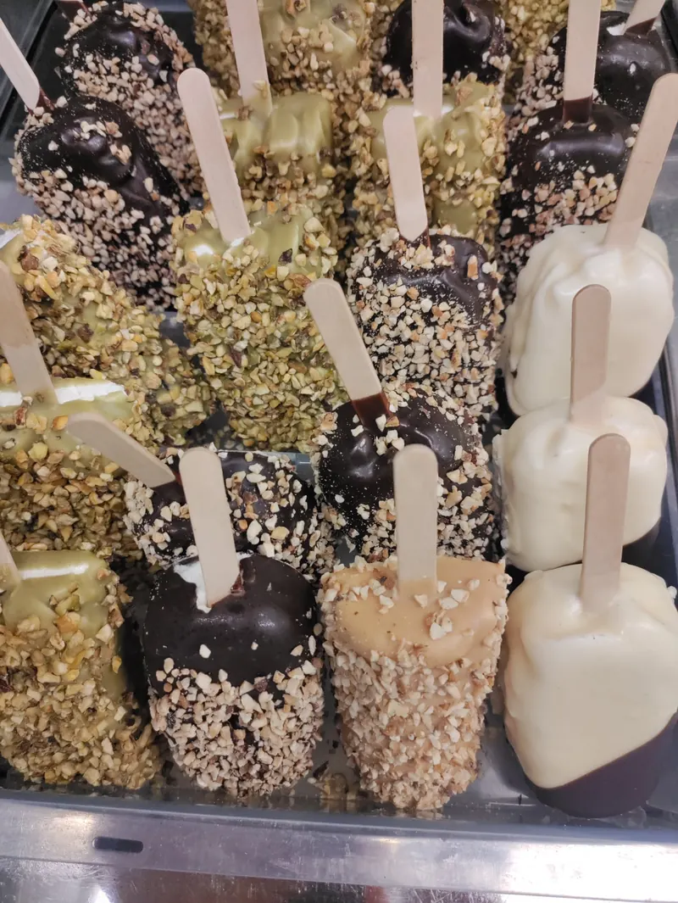
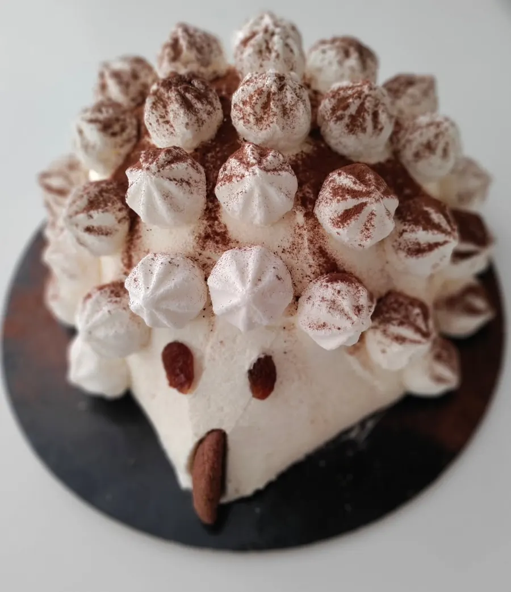

I nostri gusti di punta
Ingredienti di qualità e ricette che in famiglia ci passiamo da una generazione all'altra. Se entri per la prima volta, comincia da qui.
- Crema di burro salato
- Cremino di nocciola
- Cioccolato extra fondente
Poi i classici, come l'Oma Rita creme e la zuppa inglese. E i più originali: il verdone, il segreto dell'Etna, il Messico e nuvole.
Riempi la vaschetta
Scegli la misura e i gusti, il prezzo lo vedi subito. Poi ordinala su Deliveroo, con consegna o ritiro, oppure chiamaci.
Vaschetta piena: togli un gusto per cambiarlo, o scegli una misura più grande.
Gusti e prezzi del nostro menu su Deliveroo. In negozio la vetrina cambia spesso: alcuni gusti ci sono solo in certi giorni.
Ogni tanto, un gusto nuovo
La vetrina non sta mai ferma. Il Messico e nuvole, il nostro gelato salato. Il Raffaello, bianco e soffice. Il Millefoglie. E a fine estate l'uva fragola, che piace tanto e dura poco: il tempo per farla è limitato.
Le novità le annunciamo su Instagram, @gelateriatopuno.



Cannoli, granite e brioche col tuppo
Cialda sottile e fragrante, crema di ricotta setacciata, pistacchio tritato da un lato e gocce di cioccolato dall'altro: sono i nostri cannoli. Dal cannolo è nato anche un gusto di gelato, con canditi, cialda sbriciolata e pistacchio.
D'estate ci sono le granite, che nelle vostre recensioni sono le più nominate. E la brioche col tuppo, anche da riempire di gelato.
D'inverno, il gelato va in tavola
Quando fa freddo, i semifreddi della tradizione: da portare a tavola per le feste, o da tenere in freezer per fine cena.
-

Zuccotto di semifreddo
Semifreddo al bacio, semifreddo allo zabajone e amarene, sotto una cupola di pan di Spagna bagnato con alkermes.
Per 4 persone 15,50 €
Per 6 persone 21,00 €
-

Salame al cioccolato
Il nostro salame freddo con biscotti secchi, burro e cacao. Un gusto della tradizione, per tornare bambini.
Box da 6 pezzi 19,50 €
-

Semifreddi misti
All'amaretto o bacio e amaretto. Oppure i biscottoni: amaretto con granella di amaretti, pistacchio, nocciola, fiordipanna con copertura al cioccolato.
Box da 4 pezzi, due gusti a scelta 15,50 €
-

Stecchi di semifreddo
I nostri stecchi, con le coperture che scegli tu.
Box da 4 pezzi 15,50 €

E il riccio
Una soffice nuvola di panna, un ciuffo di meringhette spolverate di cacao, due occhietti curiosi e un nasino di mandorla. Non punge e non va in letargo: si lascia mangiare.
Prezzi del nostro menu su Deliveroo.
Cosa scrivete di noi
4,6 stelle su 5 su Google, con 296 recensioni.
-
«Il gelato è preparato con ingredienti freschi e di qualità. C’è una vasta scelta e, ogni tanto, si trovano anche gusti nuovi e originali.»
Denisa, su Google
-
«Sembra veramente di mangiare una millefoglie in una coppetta, gusto da 5 stelle.»
Albert T., su Google
-
«Top! Best Gelato since a looooong time!!»
Moritz, su Google
Orari
Orari qui sotto
| Da lunedì a sabato | 15:00–22:30 |
|---|---|
| Domenica | 10:00–12:00 15:00–22:30 |
Ogni inverno ci prendiamo una pausa: nel 2026 abbiamo riaperto sabato 7 febbraio. Le date le trovi su Instagram.
Dove siamo
Corso Vittorio Emanuele II, 14337069 Villafranca di Verona (VR)
Sul corso, nel centro storico, a pochi passi dal Castello Scaligero.
Apri in Google Maps- Telefono347 696 5065
- Consegna e ritiroDeliveroo
- Instagram@gelateriatopuno
- FacebookGelateria TOP UNO Villafranca